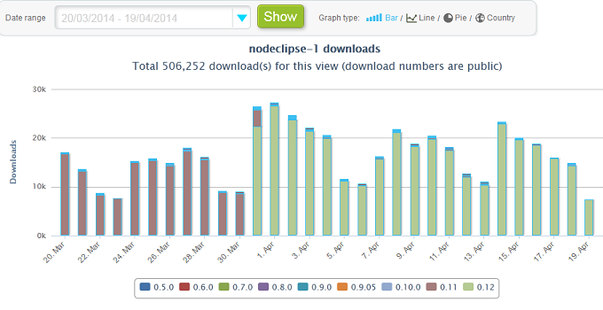
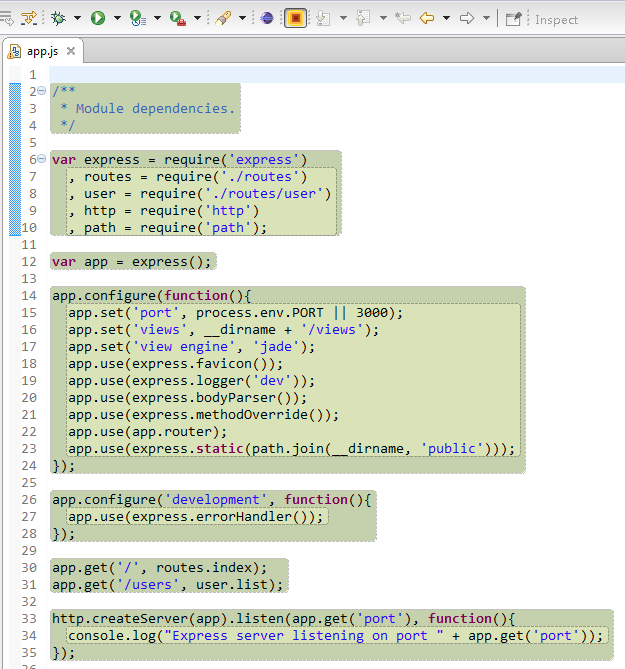
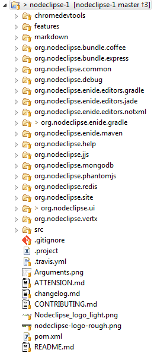

Nodeclipse & Enide
/noʊdˈklɪps/ , AnIDE
Clipse Node. Brining Node.js and Java worlds together since 2012. Tools for JavaScript and Java: Node.js, Android, Gradle and more.


{% include navigation-links.html %}
Developed by
- Paul Verest connect on LinkedIn, connect on Twitter, meet on SZJUG, TEDxShenzhen.
- If you are in Shenzhen 深圳 or Hong Kong and would you like to talk about tech and what You do, skype me or come to our monthly meetings.
- Tomoyuki Inagaki
- Lamb Gao
- see other contributors. Note that included and referenced plugins may have their own authors, see history page.
BIG THANKS to
Funshion Online http://www.fun.tv/ that let Paul devote some personal research time for Nodeclipse development in 2012-2015.
Funshion Online is company in China (now part of Shanghai Media Group)
serving Video content to 500 000 000+ users and is using Node.js.
News and Announcements
2018-01-11 Nodejs 8 has depricated --debug command option, so debug may not work.
The code in question is cmdLine.add("--debug"+brk+"="+nodeDebugPort);
LaunchConfigurationDelegate.java#L114.
Help is needed to try out solution for Nodejs 8
#220
.
2017-11-03 Have you tried BlueSky - new simple and productive Web Development Tools by Mickael Istria. Available on marketplace and soon in Nodeclipse plugin list.
2017-10-31 CSV Edit (with a tiny change)
was built and update site is now at
http://www.nodeclipse.org/updates/csvedit/
Also installable via on marketplace
and in Nodeclipse plugin list.
2017-11-18 Gradle IDE Pack repository
(on marketplace)
now includes EGradle.
And by default when using MPC
EGradle Editor for .gradle files
is installed. It is superior to
Minimalist Gradle Editor developed here 2 years ago.
2017 October headlines and links:
Bash Editor for Eclipse by Albert Tregnaghi
is now stable, released as 1.0.
(is listed in
Nodeclipse Plugins List
)
Eclipse Oxygen New and Noteworthy
2016 November headlines and links:
Video on Youtube "Eclipse Neon.1" by Holger Voormann, starting at Web/JavaScript improvemnts
and
Eclipse Neon New and Noteworthy
2016-11-1 Eclipse Editors for Polyglot Maven: Atom & Groovy
&
Minimalist .proto files Editor (for Protocol Buffers and gRPC)
are released.
As they are coming from one repository, update site is also one
http://www.nodeclipse.org/updates/polyglot-maven-ide-pack/.
2016-8-22 TypeScript IDE and Angular2 Eclipse 1.0
Angelo Zerr and Pascal Leclercq have just released TypeScript IDE and Angular2 Eclipse 1.0.
Read New-and-Noteworthy-1.0.0 for
TypeScript IDE and
Angular2 Eclipse.
( It got TypeScript completion, hover, hyperlink, code folding, mark occurrences, find references, outline;
Editors for Angular2 and Angular CLI support to name a few. )
Note that Angular v2 itself is not released and is in RC5 status.
Both solutions can be also quickly installed via
Nodeclipse Plugins List 2.0.
2016-6-23 Eclipse 4.6 Neon
 is released and available for download.
Here comes again "Eclipse IDE for JavaScript and Web Developers" package
and new "Eclipse for Android Developers" with Andmore project (ADT continuation).
Any bugs report as
GitHub issues.
is released and available for download.
Here comes again "Eclipse IDE for JavaScript and Web Developers" package
and new "Eclipse for Android Developers" with Andmore project (ADT continuation).
Any bugs report as
GitHub issues.
Eclipse Che
, coming from online IDE codenvy.com
, is now even promoted from download page.
2016-6-xx Joyent (Node.js creator) is acquired by Samsung. Node.js Foundation already has IBM, Intel, Microsoft, Red Hat, Google, SAP, Yahoo!. yahoo!
2016-6-3 news:
Eclipse Neon will be released in June and will require at least Java 8 to run.
Try out
Genuitec JSjet
for better ES6 support. (Not FOSS, free for use for 8 days per month).
Webclispe JS Debugger cannot be installed into Nodeclipse.
Hopefully this will change with Piotr Tomiak work.
Get Eclipse shortcuts cheatsheets for Mars and Neon.
2016-4-15 Polyglot Maven with YAML IDE Pack.
2016-3-25 We were changing domain registrar migrating from godaddy.com, and they did not allow that. The result was wrong DNS resolution, that was not noticed and understood at once. If you know how to move off godaddy.com hook, please comment at www#72. Thanks to Rachel Berry and Daniel Chapman from GitHub Support for quick and detailed help.
2016-2-29 Gradle Editor now lives at https://github.com/Nodeclipse/GradleEditor.
2015 November headlines.
Node.js Foundation Individual membership is free for contributors, with right to vote for Board of Directors.
2015-11-08 Anide 1.1 with ECMAScript 6 ( aka ES6/EcmaScript 2015 ) support

Angelo Zerr and Pascal Leclercq have just released tern.java, AngularJS Eclipse, Eclipse WTP WebResources.
Available at Anide update site
http://www.nodeclipse.org/updates/anide/
, main update site and within Enide Studio 2015 marketplace install
{% include nodeclipse_install_button.html %}.
Read New-and-Noteworthy-1.1.0 for
tern.java and
angularjs-eclipse.
( It got ECMAScript 6 support, ES6 features completion, hyperlink.
Tern Outline was improved to support ES6 features like ES6 class.
Phaser support.
Angular Explorer View got Sort action. )
Hint of the day: run node -p process.versions.v8 to learn current V8 version.
2015-11-7 add Mirur Visual Debugger, include the latest JSHint-Eclipse.
Add to update site and Enide 2015 Mirur Visual Debugger.


It works for Java. UPDATE and
for JavaScript since Dec 2015.
2015 October headlines.
Node v5 is released, and will be non-LTS version
with npm v3 and V8 v4.6.
Red Hat joined Node.js Foundation,
Eclipse Mars.1 is the first to bring new feature with every service release
and
JSHint-Eclipse 0.10 with included JSHint 2.9.0.
Nodeclipse packages (update-site zip archive and stand-alone IDE distributions)
downloads from SourceForge
surpass 100K.
2015-9-25 Nodeclipse 1.0.2 fix for #198. If you got 1.0.1 and doing Node.js development update to 1.0.2 or set Preference "pass all environment variables of Eclipse to launched Node.js app".
2015-9-24 Nodeclipse 1.0.1 "are we ready for ES6?"
Enide, Nodeclipse version 1.0.1 are released.
This train also comes with Markdown Editor 1.2
and EditBox 0.70.
Update site is
http://www.nodeclipse.org/updates/
{% include nodeclipse_install_button.html %}
Also available in
{% include nodeclipse_update_site.html %}
(faster, but without future updates).
There is also update site .zip archive on SourceForge.
See history for details.
2015-9-17 Node.js v4.1 For 4.x there is Breaking changes and current bugs.
2015-9-10 StrongLoop has been acquired by IBM.
2015-9-8 Node.js v4.0. Quote: "Node.js v4.0.0 contains V8 v4.5, the same version of V8 shipping with the Chrome web browser today. New ES6 features are enabled by default." Node.js Foundation feels like Eclipse Foundation with IBM and Microsoft as platinum members. To be voting member it should be a company paying at least $50K annually (as on presentation, slide 12). Is this the official end to smaller companies playing Node.js business games?
2015-9-1 Anide 1.0
Angelo Zerr and Pascal Leclercq have just released tern.java, AngularJS Eclipse, Eclipse WTP WebResources.
Available at Anide update site
http://www.nodeclipse.org/updates/anide/
, main update site and within Enide Studio 2014 marketplace install.
Read New-and-Noteworthy-1.0.0 for
tern.java and
angularjs-eclipse.
( It got ECMAScript 6 (Promise), better Node and RequireJS, JSDoc, Delite, Tern Explorer View,
Tern Hyperlink inside HTML, Browser Extension for HTML elements ids, CSS Selectors to name a few. )
2015-9-1
EcmaScript 6 support is coming,
speed it up by thanking Marijn Haverbeke for his long continuous work on
ternjs
(GitHub)
and donating a coffee cup or beer
Bounty to him.
@Marijn, I hope the project will get a way for saying thanks and donate in open way.
Just having
ES6 features bounty
open would do that.
P.S. Marijn Haverbeke is
asking
for monthly payment via
https://marijnhaverbeke.nl/fund/
2015-8-18
Nodeclipse EditBox
0.70.0 released.
Before Nodeclipse 0.18 train release it is available only from
http://www.nodeclipse.org/updates/editbox/
2015-07-07 Enide 2015-7
Enide 2015 is package distribution based on Eclipse 4.5 Mars
with plugins for Java and JavaScript:
Maven, Gradle, AngularJS, Node.js. All we have, all we know.
{% include enide-2015-downloads.html %}
If you want an existing plugin to be added to the next version, raise issue at
https://github.com/Nodeclipse/packages/issues.
HELP IS NEEDED with artworks and logos for Enide 2015 and AjsIDE.
2015-6-18 AngularJS Eclipse, Eclipse WTP WebResources and Tern Eclipse IDE 0.10.0 are released.
Named together as Anide and available at Anide update site
http://www.nodeclipse.org/updates/anide/
, main update site and within Enide Studio 2014 marketplace install.
Read New-and-Noteworthy-0.10.0
for tern.java
and
eclipse-wtp-webresources closed issues.
( It got runtime-generated completion & hover icons, multi types support;
new support for Bootstrap, jQuery UI, jQuery Mobile, QUnit, Google Charts, three.js, Chrome Extension API,
Appcelerator Titanium (basic)
and improvements for JSDoc, YUI & AlloyUI, Dojo 1.10. )
2015-4-18 AngularJS Eclipse, Eclipse WTP WebResources and Tern Eclipse IDE 0.9.0 are released.
Named together as Anide and available at Update site
http://www.nodeclipse.org/updates/anide/
main update site and within Enide Studio 2014 marketplace install.
Just read New-and-Noteworthy-0.9.0
for tern.java
only. (It got Async tern completion, WTP Tern Validator, Grunt & Gulp support, YUI / AlloyUI Improvement
and Google Maps Improvement.)
2015-03-20 Nodeclipse CoffeeScript Viewer
(mp)
was missing on main update site. Thanks to
raised question on StackOverflow.com
it is now restored under
http://www.nodeclipse.org/updates/coffeescript/
to included recommended
Nodeclispe EditBox.
2015-03-19 Enide Studio 2014.17 update 2 for Windows x64
mp
is update of Eclipse package distribution taking Eclipse IDE for Java Developers Luna SR2
with the latest AngularJS, TernIDE and TCF Terminals included.
Get
 Enide Studio 2014.17-u2 for Windows x64
Enide Studio 2014.17-u2 for Windows x64
For other OSes recommended install/update via drag-and-drop of install button
 on Eclipse main toolbar.
on Eclipse main toolbar.
2015-02-25 Nodeclipse Updates p2 repository
is updated to included the latest
TCF Terminals.
New:
- Open Terminal or Git Bash by wright-clicking folder in Project Explorer and selecting "Show in" menu.
Enide Studio 2014 is
the most featureful distribution
where AngularJS, TernIDE and TCF Terminals are already included.
Recommended install/update is via drag-and-drop of install button
on Eclipse main toolbar.
2015-1-28 AngularJS Eclipse, Eclipse WTP WebResources and Tern Eclipse IDE 0.8.0 are released.
Named together as Anide and available at Update site
http://www.nodeclipse.org/updates/anide/
Read New-and-Noteworthy-0.8.0
for tern.java
and angularjs-eclipse.
(It got ECMAScript 6, Jasmine, Protractor, snabbt.js support and more.)
2015-1-26
Markdown Editor
1.2 released.
Before Nodeclipse 0.18 release it is available only from
http://www.nodeclipse.org/updates/markdown/
2014-12-04 AngularJS Eclipse, Eclipse WTP WebResources and Tern Eclipse IDE 0.7.0 are released.
Named together as Anide and available at Update site
http://www.nodeclipse.org/updates/anide/
Read New-and-Noteworthy-0.7.0
for tern.java
and angularjs-eclipse.
(It got Node.js Express, Node.js MongoDB Native, Node.js Mongoose and tabris.js support.)
With this release
Eclipse WTP WebResources
is also included into Anide Update site.
2014-10-13 .17.plus
Nodeclipse, Enide.p2f and Enide Studio 2014 marketplace entries updated to include Tern support.
See history for details.
2014-10-11 Enide Studio 2014.17 for Windows64 released
 Get it from SourceForge.
Get it from SourceForge.
Read README_2014.17.
If I had notebook with Linux/OS X, there could be such package as well.
2014-10-10 Enide Studio 2014 to be
the most featureful distribution
with AngularJS, TernIDE and TCF Terminals included.
Recommended install via drag-and-drop of install button
on Eclipse main toolbar.

2014-10-04 AngularJS Eclipse and Tern Eclipse IDE 0.6.0 are released.
Named together as Anide and available at Update site
http://www.nodeclipse.org/updates/anide/
Read New-and-Noteworthy-0.6.0.
2014-09-26 0.17 "Express 4.x and TernIDE support" release
Enide, Nodeclipse version 0.17 are released. Update site is
http://www.nodeclipse.org/updates/
{% include nodeclipse_install_button.html %}
Also available in
{% include nodeclipse_update_site.html %}
(faster, but without future updates).
There is also update site .zip archive on SourceForge.
See history for details.
2014-09-01 AngularJS Eclipse and Tern Eclipse IDE 0.5.0 are released.
Named together as Anide and available at Update site
http://www.nodeclipse.org/updates/anide/
Look at sources and wiki: AngularJS Eclipse
and Tern Eclipse IDE .
Read New-and-Noteworthy-0.5.0.
AngularJS Eclipse and Tern Eclipse IDE 0.4.0 are released.
Named together as Anide and available at Update site
http://www.nodeclipse.org/updates/anide/
Look at sources and wiki: AngularJS Eclipse
and Tern Eclipse IDE .
Read New-and-Noteworthy-0.4.0.
2014-06-26 AngularJS Eclipse and Tern Eclipse IDE 0.3 are released.
Named together as Anide and available at Update site
http://www.nodeclipse.org/updates/anide/
Both AngularJS Eclipse
and Tern Eclipse IDE projects have great wikis.
Read New-and-Noteworthy-0.3.0.
2014-06-09 0.16 "ECT" release
Enide, Nodeclipse version 0.16 are released. Update site is
http://www.nodeclipse.org/updates/
{% include nodeclipse_install_button.html %}
Also available in {% include nodeclipse_update_site.html %} (faster, but without future updates).
There is also update site .zip archive on SourceForge.
A few minor fixes and Eclipse Color Theme (ECT) that now supports everything,
see history.
2014-05-30 AngularJS Eclipse and Tern Eclipse IDE 0.2 are released.
Named together as Anide and available at Update site
http://www.nodeclipse.org/updates/anide/
Both AngularJS Eclipse
and Tern Eclipse IDE projects have great wikis.
2014-05-12 The most popular?
Or what is calculation for http://marketplace.eclipse.org/popular/top,
but it is definitely not download numbers.
Recently I (Paul Verest) looked closer at
Eclipse Color Theme plugin (ECT)
that in #3 on Eclipse marketplace,
and is not backed by any company or commercial interests.
And what could I see? Users issues are not commented, merged changes are not released for 2-3 months.
When I got inpiration (after
Teoh Han Hui support of Gradle Editor in Moonrise UI theme,
see history) to update ECT with support for Gradle Editor and Chromium Debugger JS Editor,
I released newer ECT version the same day. And the decision was right. The pull request is not yet merged,
while you can use
ECT 0.14
already.
Have you noticed many I? That is considered not good manner, but the fact is since 0.6 I have been pushing this project
along one person. And got feeling to my bones what is feels to make Nodeclispe, to connect Node.js and Java worlds,
something that neither Java big companies, nor Joyent or StrongLoop would fancy.
Companies prefers to have tools done on their stack.
I am looking for ways to make it possibly to spend more time for the project,
but that would require some commercial backing.
Otherwise the porject would just go slowly, when I or other developers have time.
2014-04-30 0.15.1 "Gradley"
Enide, Nodeclipse version 0.15 are released. Update site is
http://www.nodeclipse.org/updates/
{% include nodeclipse_install_button.html %}
Also available in {% include nodeclipse_update_site.html %} (faster, but without future updates)
and enide-repository https://raw.github.com/Enide/eclipse-p2-composite-repository/master/ .
There is also update site .zip archive on SourceForge.
This release is mostly about Gradle.
Now you can use TODOs in your code, and they will be shown in Tasks without TODOs in used modules.
Also there are now color preferences for 3 Editors.
See history for more.
Wanna ask?
2014-04-29 Node.js support in IBM and CloudFoundry
IBM has recently released beta of
BlueMix for Eclipse
That has Node.js support. While Pivotal CloudFoundry
had Node.js support for
long time.
2014-04-28 0.15 "Gradley"
Enide, Nodeclipse version 0.15 betta are released. Update site is
http://dl.bintray.com/nodeclipse/nodeclipse/0.15/
see history.
2014-04-22 What is Nodeclipse?
What is Nodeclipse for you? Edit wikipedia article.
2014-04-20 More than 500 000

More than 500 000 files per month are served with
BinTray service
for our update site.
2014-03-31 0.12 "Android friendly color"


Enide, Nodeclipse version 0.12 are released. Update site is
http://www.nodeclipse.org/updates/
{% include nodeclipse_install_button.html %}
Also available in {% include nodeclipse_update_site.html %} (faster, but without future updates)
and enide-repository https://raw.github.com/Enide/eclipse-p2-composite-repository/master/ .
There is also update site .zip archive on SourceForge.
Gradle (Eclipse plugin) can now be used to deploy .apk into Android Virtual Device AVD;
more and more help coming from friendly Nodeclipse users, see
PR#136;
and we include plugins to colorize our developer lives.
See all details at http://www.nodeclipse.org/history
Android, friends, colors... how to say it in one word? Well, Android is also using green color,
but as you see it is much more
than just about one shared color.
Wanna ask?
2014-03-27 Nashorn debugging & Avatar.js
Thanks to Jim Laskey for referencing Nodeclipse as possible place,
where Nashorn debugging with Eclipse can be made,
but we do need help on that from Eclipse & Oracle.
And from that post I myself have learned that Node.js port to JVM is finally open-sourced
as Avatar.js.
2014-03-26 remember the Sun

More Duke images
Cute, isn't it?
Node.js does not have yet mascot. Propose one.
2014-03-25 EditBox plugin
Just by chance discovered
EditBox plugin

See also Nodeclipse EditBox
Please do raise an issue
if you know other diamonds in rough.
2014-03-25 Nodeclipse CoffeeScript Editor
0.4.0-201403250304 released
Update repository
http://dl.bintray.com/nodeclipse/CoffeeScriptEditor/0.4.0-201403250304/
0.4.0 has Merged Pull Request #23 from Matt Tucker "When indenting, respect Eclipse editor preferences for tabs/spaces".
CoffeeScript Editor has issue #19 that appeared since Eclipse 4.3.1, and makes it unusable because of poping dialog when editing.
You need Eclipse 4.3.0 to use, e.g. Enide Studio 0.5.x.
For the project to revive, XText technology knowledge is needed.
2014-03-25 Nodeclipse 0.12 prerelease
Nodeclipse 0.12 is feature complete. And it will be released in a week as expected.
Following update repository can be used to get it before the release date.
http://dl.bintray.com/nodeclipse/nodeclipse/0.11.0.20140324/
Known issue: repository includes Eclipse plugin for LESS
that can't be installed.
2014-03-24 IBM Acquires Cloudant
IBM Acquires Cloudant (Company behind CouchDB).
And CouchDB is database that is used by npm registry.
See also inside npm-proxy project.
 .
.
Note that Red Hat and EMC have
invested in MongoDB.
Pivotal (EMC related) is nurturing Redis.
2014-03-24 Ansi Console
Thanks to John McCarthy for
pointing to
Ansi Console plugin
 .
.
Update site: http://www.mihai-nita.net/eclipse
Sources at https://github.com/mihnita/ansi-econsole
2014-03-20 AnIDE is coming..


AnIDE is coming, and it is not about Android
(though v0.12
of Gradle(Enide)
plugin can be used to deploy Android apk to Android Virtual Device),
but more about AngularJS.
Angelo Zerr has contacted me through
#119
and this way I discovered that there is AngularJS-eclipse plugin being developed by him
and Pascal Leclercq.
They are also working on tern.java
a Java wrapper for tern.js
- a stand-alone code-analysis engine for JavaScript written in Javascript.
When tern.js is running using Node.js, it is much faster than using Rhino.
And it also can improve code assist for Node.js and jQuery.
Hopefully angularjs-eclipse
will be released within month
#32.
Name discusson is at
#36.
2014-02-28 Enide Studio 2014 0.11-preview
Enide Studio 2014 is preview release based on Eclipse 4.4M4.
While I use it myself daily since January 2014, some bugs in Eclipse newer features are possible.
Nodeclipse and Enide plugins are of the same released versions.
The intention is to let you try this Eclipse package (that has a lot of improvements)
without separate step of installing needed plugins.
Downloads are from
SourceForge:
win32, win64 and MacOS X cocoa x86_64.
{% include enide-studio-2014-downloads.html %}
For this preview release you are expected to give notice of anything not good that you notice,
and share ideas throught GitHub issues.
UPDATE: There seems to be a problem with download from "0.11-preview" folder in some locations.
Please raise an issue.
2014-02-25 0.11 "Do It Yourself"
Enide, Nodeclipse and Nodeclipse CLI version 0.11 are released. New update site is old
http://www.nodeclipse.org/updates/
{% include nodeclipse_install_button.html %}
Also available in {% include nodeclipse_update_site.html %}
and enide-repository https://raw.github.com/Enide/eclipse-p2-composite-repository/master/ .
There is also update site archive on SourceForge.
#81, #92, #120 are resolved. Check What's new to learn more.
 source
source
Make your own Eclipse! Start from folder with older Eclipse,
then with Nodeclipse CLI (npm i nodeclipse -g) specify new folder to put Eclipse in:
nodeclipse new from luna to your/destination/folder
This can take a while. Then when Noclipse CLI Installer finished, cd to folder and run Eclipse:
cd your/destination/folder
eclipse
You can continue installing plugins. (Even if Eclipse is running, but you will need to restart afterwards):
nodeclipse install egit
nodeclipse install markdown gfm startexplorer jshint
Note that installing this way plugin with dependencies (e.g. Nodeclipse plugin) is not yet possible, so use GUI.
Wanna ask?
2014-02-15 Host npm registry in your LAN!
As you may know (even if you missed) there were
disruptions of npm registry service in November.
That created series of events:
There was scalenpm.org campaign that collected 326 000 dollars
(mostly from companies) and turned out to be associated with Nodejitsu.
And Isaac Z. Schlueter (author of npm and registry)
leaving node team lead role
and creating "npm, Inc.", that just
got $2.6M of funding.
The free services will stay free and there will be some new paid services.
For that Nodeclipse can also give opportunity to cache npm modules in LAN server with
npm-proxy.
Questions, ideas for npm-proxy are only through issue tracker of Nodeclipse/npm-proxy repository.
2014-01-27 ten
Enide & Nodeclipse version 0.10.0 are released. New update site is
{% include nodeclipse_update_site.html %}
{% include nodeclipse_install_button.html %}
or use Enide repository https://raw.github.com/Enide/eclipse-p2-composite-repository/master/ .
There is also update site archive on SourceForge.
Checking What's new is nessasary.

2014-01-26 Nodeclipse CLI
Nodeclipse CLI 0.10.0
is published with npm registry.
Install it with $ npm install -g nodeclipse
Now create new project in any way, then $ nodeclipse -p to make the project ready for import
via File -> Import -> General / Existing Projects into Workspace.
CLI util also allows to create new Node.js projects like $ nodeclipse -c project1 -u hellow-world.
And that is great because it uses
the same templates as Nodeclipse plugin.
So if you have an idea for new wizard, propose your additions with pull request as new_folder,
then it will be immediately available as $ nodeclipse -c new_project1 -u new_folder,
and after a while as Wizard option in Eclipse/Enide.
Check README for what's new.
2014-01-21 Enide repository
Finally found a way to have constant update site URL for all Nodeclipse versions,
the tech is called Eclipse p2 composite repository.
Use Enide repository
to get Nodeclipse and other plugins from one URL:
https://raw.github.com/Enide/eclipse-p2-composite-repository/master/ .
Make your own and propose adding your favourite plugin: just create issue or pull request for
Enide repository.
Please leave a star on GitHub.
2014-01-09 GFMV 1.8.1
Finally
GFMV#47
with GitHub Flavored Markdown Viewer plugin 1.8
( Update p2 repository: http://dl.bintray.com/satyagraha/generic/1.8.1 )
you are able to right-click
node_modules folder Generate Markdown Preview
and after that open any .md file with Show in GFM View instantly, any time,
even when offline, and it will look exactly like on GitHub.
( HTMLs are saved into .*.md.html filenames.
They will not be committed when project's .gitignore file has .*.md.html.
The .* files are hidden in Eclipse by default, but see "No miracles, just files" below. )
See all previous news at one page.
Shared posts
-
{% for post in site.posts limit:5 %}
- {{ post.date | date_to_string }} » {{ post.title }} {% endfor %}
See all shares.
Installing
If you have not installed Node.js yet,
please install it first.
Then, please install Nodeclipse CLI and Express as follows.
$npm install -g nodeclipse
$npm install -g express
Drag and drop {% include nodeclipse_install_button.html %} into a running Eclipse to install Nodeclipse.
Or use update site:
{% include nodeclipse_update_site.html %}
Check download page for more details.
Features
See /features page.Usage
See 1366x768 introduction video at /video page or see lower resolution on Youtube. Read also Hints and Online Help. Online Help is also shipped as built-in help that is accessible by F1
See /usage page.Support
Browse existing questions on StackOverflow, as we do. feed
- How do I? -- 1) F1/Help -> Help Contens -> Nodeclipse Help ,
2) Online Help or
3) StackOverflow! *1
*1 Don't forget to add `nodeclipse` tag. - I got this error, why? -- StackOverflow! *1
- I got this error and I'm sure it's a bug -- raise an issue!
- Try starting discussion at Nodeclipse forum(Mailing list)
Should you report a bug, please include the following:
- Nodeclipse version number (like 0.4 or 0.8)
- Eclipse version number (like 4.3.1 Kepler or 4.4.0)
- Eclipse distribution (e.g. Enide Studio 2014, Eclipse SDK, Eclipse for JEE Developers)
- A detailed description of the steps necessary to reproduce the problem.
- Screenshot and stack trace, that you can get from Eclipse Error Log View (Window -> Show View ...) or from '.log' file from the directory '.metadata' in your workspace.
- See example issue #78
Fork code on GitHub
You can also clone the nodeclipse-1 project with git and prepare for import as General project by running:
$ git clone git://github.com/Nodeclipse/nodeclipse-1.git
$ cd nodeclipse-1
$ nodeclipse -g
Play with code
- Select project folder, e.g. org.nodeclipse.enide.editors.jade or org.nodeclipse.enide.gradle
- Ctrl+Alt+C (or StartExplorer Copy Resource Path to ClipBoard)
- File -> Import -> Existing Project into Workspace
- Ctr+V into directory
- open `plugins.xml`
- click `Launch an Eclipse application in Debug mode`
- Now you can change code and instantly see how IDE behaves now in second Eclipse
Then build all with
$ mvn package
First time maven needs download all plugins and used packages. Check README.
Hepling
Start by raising an issue about what you have on your mind, share some related information and links. See possible ways to help below:
Critical Issues
Help wanted
- What content should .jshintr have? Read JSHint docs and books like JavaScript: The Good Parts by Douglas Crockford
- #134 Minimalist Jade Editor

Hosted by